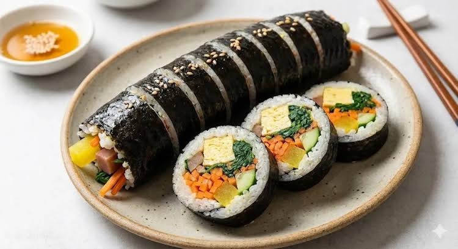

Introducing Korean foods

A colourful roll of rice and vegetables.
Kimbap
Kimbap is a Korean dish made from bap (cooked rice), vegetables, and optionally, cooked seafood or meat rolled in gim—dried sheets of seaweed—and served in bite-sized slices.
The dish is often part of a packed meal, or dosirak, to be eaten at picnics and outdoor events.
Learn more on Wikipedia.
Watch how to make Kimbap